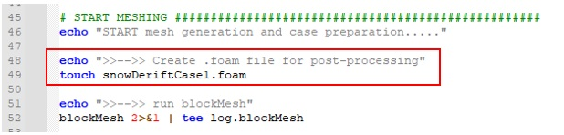
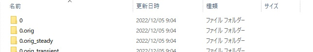
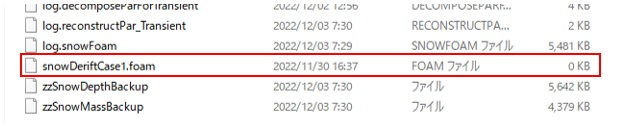
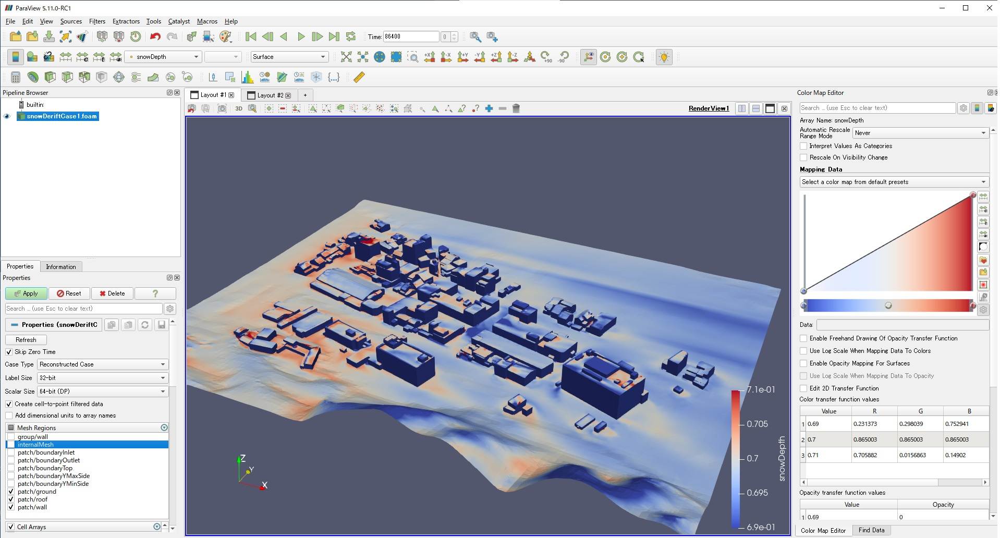

(5) 計算結果の表示 (Paraviewで表示)
計算結果は、風速Uや積雪深snowDepthなどがファイルごとに出力されます。また、テキストデータであるため、ポスト処理として可視化ソフトで計算結果を表示させることが望ましいです。
一般的にOpenFOAMではフリーの可視化ソフトウェアParaviewにより可視化を行います。前述のシェルスクリプトには「○○(任意の名前).foam」という空ファイルを作成する記述があります。そのファイルをParaviewにドラッグ＆ドロップさせることで、OpenFOAMの計算結果を自動的に読み込みます。

図 シェルスクリプトの抜粋


図 プロジェクトフォルダ内に作成される「○○.foam」

図 Paraview表示画面の例